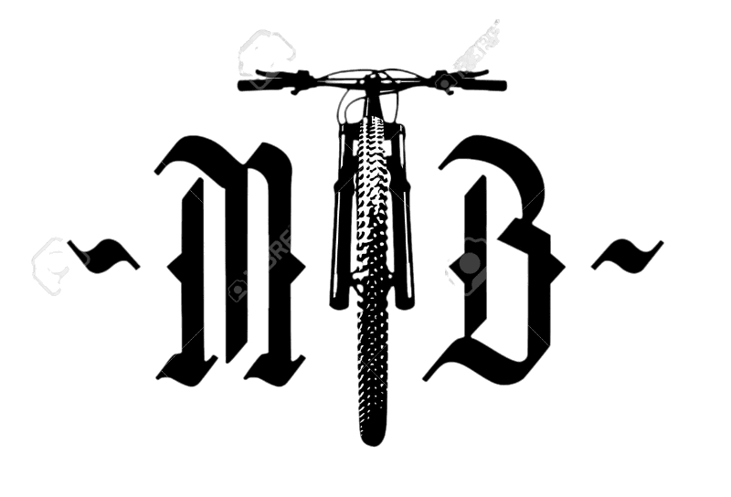

-
Las herramientas básicas para un buen mantenimiento
Lo primero es contar con un pequeño juego de herramientas. No te va a valer de nada comprar herramientas de baja calidad, comprarás dos veces. Así de claro. Si compras una mala herramienta posiblemente arruine alguno de los tornillos o piezas de tu bici y ya sabes que muchas de ellas no son precisamente baratas. Es muy importante que poco a poco vayas reuniendo un buen kit de herramientas para tener en casa y hacer el mantenimiento de la mejor manera posible y, por otro lado, otro kit que te puedas llevar en tus salidas. Para un correcto mantenimiento, evita las herramientas malas o inadecuadas, el resultado no puede ser bueno. En este sentido te animamos que en tu «presupuesto» para tu Bicicleta incluyas de vez en cuando alguna herramienta en tu cesta de compra. Las herramientas básicas son un juego de llaves allen, un cortacables, dos destornilladores (uno plano y otro de estrella), una llave torx T25 y una llave dinamométrica con ajuste y medidas intercambiables. Estas son las más básicas. Con el tiempo podrás hacerte con otras más específicas como la del eje de pedalier o un extractor de rodamientos.
-
Revisa y mantén los tornillos bien apretados
Muy fácil y rápido, la revisión y apriete de la tornillería de tu bici te puede evitar más de un problema. Con una llave torque o dinamométricas que indican el par de apriete (hoy en día hay muchos modelos muy económicos) podrás revisar el par de apriete tanto de los componentes como de los puntos de giro y los ejes pasantes de tu basculante en el caso de una Bicicleta de doble suspensión. También existen llaves prefijadas de fábrica con par de apriete 4-5Nm que son muy comunes para manillares y potencias que son económicas, pequeñas y muy útiles. Importante sobre todo revisar la potencia y manillar, los tornillos de las bielas, puntos de giro, patilla de cambio y ejes de las ruedas en el caso de que no sean cierres tipo palanca. Es algo que lo puedes hacer antes de cada salida y te llevará un par de minutos.
-
Ajuste de la dirección
La dirección es uno de los puntos de tu Bicicleta más sencillos de mantener, pero también uno de los que nos olvidamos habitualmente. Desmontar la dirección, limpiarla y engrasarla es cuestión de minutos. Hay que tener en cuenta que los rodamientos están muy expuestos al barro y al agua (sobre todo el inferior) y conviene revisarlos por lo menos una vez al mes. En Bicicletas de gamas medias y altas los rodamientos son sellados y de alta calidad con lo que nos durarán mucho más tiempo. Pero si los limpiamos a menudo y los engrasamos ligeramente, tendrán una mayor duración. Es importante usar una llave dinamométrica para los tornillos de la potencia (normalmente 4 o 5 Nm) y la tapa superior de la dirección que necesita un ajuste muy leve de unos 1-2 Nm.
-
Mantenimiento de los frenos de disco
Los frenos de disco tienen un mantenimiento básico bastante sencillo de realizar. Lo fundamental es comprobar el estado de las pastillas de freno. Si están gastadas se sustituyen y, si no, lo mejor es limpiar la superficie de frenado con un papel de lija fino. Con el uso la superficie se cristaliza (se queda brillante) y disminuye la capacidad de frenado. Con el papel de lija se pasa ligeramente hasta que el brillo desaparezca. Del mismo modo se puede limpiar el disco con productos especiales, además de revisar los tornillos de apriete del mismo. En el caso de que los pistones no vuelva a su sitio correctamente o el tacto de la maneta sea muy duro y esponjoso, habrá que realizar un sangrado completo del sistema. Hay kits completos para hacerlos, pero requiere de un cierto nivel mecánico. Si no te ves capaz, no dudes en llevar la bici a tu tienda, donde te harán un sangrado profesional siguiendo las indicaciones del fabricante. Si lo haces una vez al año, te evitarás sorpresas a mitad de temporada.
-
Una buena limpieza de la transmisión es fundamental para un buen mantenimiento
Lo ideal sería limpiar la transmisión después de cada salida, es decir, platos, casete, cambio trasero (sobre todo las roldanas o ruedecillas) y cadena. El aceite sucio y la acumulación de partículas como la arena, hacen que el desgaste de todos los componentes de la misma se acelere de manera notable. Te recomendamos aplicar desengrasante, esperar unos minutos y limpiar con agua caliente y un cepillo para que se vayan todos los restos de suciedad y aceite. Si tienes aire a presión te puede ayudar mucho a eliminar sobre todo los restos de arena en los eslabones de la cadena. Con un trapo puedes terminar la limpieza (recuerda limpiar también entre los piñones del casete). Una vez que está todo limpio y seco, aplica aceite en la cadena (una gota en cada punto de giro de cada eslabón), haz pasar la cadena por todas las velocidades y limpia el exceso de aceite con un trapo limpio. Es mejor usar un aceite para climas secos de densidad baja y aplicarlo más a menudo, que uno muy denso de lluvia que acumula más suciedad. Es muy importante que el desengrasante y el aceite sean específicos para bicicletas y de buena calidad. Sobre todo, no apliques capas y capas de aceite en la cadena sin haberla limpiado antes. Por otro lado, revisa de vez en cuando el estiramiento de la cadena con una herramienta específica (digital o manual), para valorar cuándo debes cambiarla. No solo depende de los kilómetros que hagas, sino de las condiciones de la zona por la que pedaleas, la lubricación óptima y el sistema de transmisión que tengas. En los sistemas 1X la cadena se gasta más rápido que en los sistemas de doble o triple plato.
